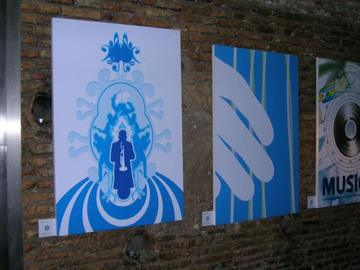
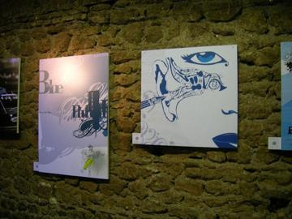
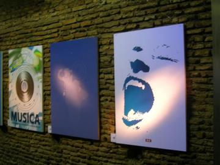
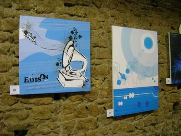

2005 · Principale · Tema/Colore
Tema/Colore 02
Musica / Blu
Seconda uscita di Tema/Colore: tema Musica, colore blu. Le opere dei grafici invitati sono state esposte al Fake di Testaccio e poi in replica al La Palma Club.
Opere 13


La serata 25 foto










Artisti 13
Chiara TomassiniClaudio AppetitoClio CrescenteElisabetta PalloneGinevra Virgili · gin°Gregorio PampinellaLuca PotenzianiMiriam Tognella · Disorder DesignRoberta Rizzi · RoRiStefano Longo · thisisstupidValentina TataValerio SpinelliViola Damiani
GRA — Genuine Roman Art · RomaOpere © i rispettivi autori